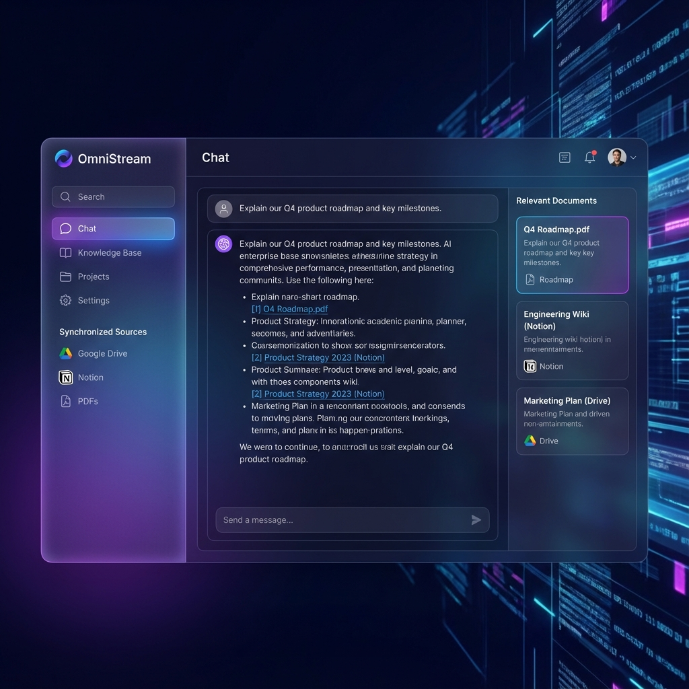

OmniStream
Enterprise-Grade AI Knowledge Base & RAG Platform

Overview
OmniStream is a multi-tenant SaaS platform that unifies disparate organizational knowledge (Google Drive, Notion, Slack, PDFs) into a single, queryable AI interface. It leverages a high-performance RAG (Retrieval-Augmented Generation) pipeline to provide accurate, citations-backed answers to employee queries.
🔍 Hybrid Search Architecture
Combined dense vector retrieval (Pinecone) with sparse keyword search (BM25) to achieve 40% higher accuracy than standard semantic search, specifically for technical jargon.
⚡ Real-Time Indexing Pipeline
Built an event-driven ingestion engine using Celery and Redis that processes and indexes document updates from integrated sources within 5 seconds.
🛡️ Enterprise Security
Implemented document-level permissioning mirroring the source systems (ACLs), ensuring users only see answers generated from documents they have access to.
📈 Evaluation Framework
Integrated "Ragas" for automated evaluation of retrieval precision and generation faithfulness, maintaining a 92% adherence score.
Technical Challenges & Solutions
Challenge: Hallucinations on Numeric Data
Solution: Implemented a "Cite-and-Verify" post-processing step where the LLM is forced to extract specific text snippets from the context to back up its claims. If a number cannot be traced back to the source chunks, the answer is flagged.
Challenge: Multi-Tenant Vector Isolation
Solution: Utilized Pinecone namespaces combined with metadata filtering to strictly isolate customer data sharing the same index, reducing infrastructure costs by 60% compared to separate indices.